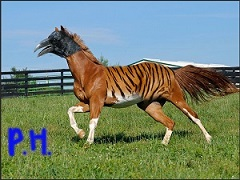

Wordpress
This is my final project for my web content mangement class where I have to used a theme an understand how a theme works.
My Custom Site
Wordpress
This is my capstone project that I have to build for my client.
Junior Achievement
Making a progessive nav
When you are changing the screen the size the nav will show more or less nav links.
My Custom Site
Animals Hybird

Wordpress
Understanding how to create post as well Randmozie them.
Bootstrap
Creat a dashboard using Bootstrap.
My Custom Site
Photo Filter
Create a photgallery that can filter by its tags using javascript.
Check it out